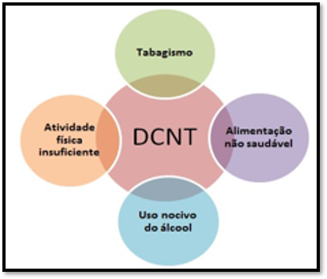
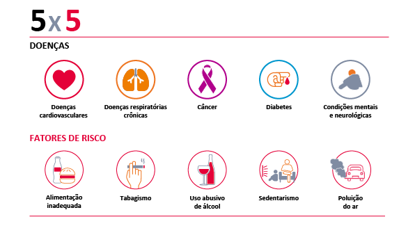

Doenças Não Transmissíveis
As Doenças Não Transmissíveis (DNTs) são enfermidades não causadas por patógenos e não possuem transmissão de pessoa para pessoa, tendo como característica sua relação mais intrínseca com fatores genéticos, ambientais e estilo de vida.
Suas causas se assentam em múltiplos fatores de risco, com origens sociais, físicas, econômicas e ambientais.


Entre as DNTs, destacam-se as doenças crônicas, especialmente câncer, diabetes e doenças cardiovasculares.
Estas são as maiores causas de mortalidade no mundo, correspondendo a 74% das mortes – 41 milhões por ano, segundo a OMS. No Brasil, em 2019, esse grupo de doenças foi responsável pela maior causa de morte em todos os grupos etários, exceto em menores de 10 anos.
Entre os fatores de risco, os principais são: obesidade, sedentarismo, consumo excessivo de álcool e/ou outras drogas, tabagismo e alimentação inadequada
Essas doenças crônicas possuem uma progressão, muitas vezes, silenciosa, como problemas referentes à pressão arterial, perda de visão, diabetes, transtornos ansiosos, depressivos e fobias, o que as torna difíceis de serem detectadas. Por se tratarem de doenças desenvolvidas a partir de aspectos multifatoriais, torna-se mais difícil a implementação de políticas de prevenção, já que não há uma causa específica a ser combatida. Contudo, é consenso que o estilo de vida moderno, com aceitação social de vários hábitos danosos à saúde, como tabagismo, sedentarismo entre outros, seja o grande fator de risco.
Parte crucial das ações passam pelo acompanhamento e detecção precoce do problema aliado com cuidados com estilo de vida, que muitas vezes é negligenciado pela alta demanda das condições de trabalho e moradia.
Dito isso, é patente que as medidas de conscientização da população pela busca de hábitos saudáveis devem ser universais, sendo acessíveis a todos, sobretudo àqueles em situação de vulnerabilidade, que, por óbvio, terão maior dificuldade no acesso.
Estas são as maiores causas de mortalidade no mundo, correspondendo a 74% das mortes – 41 milhões por ano, segundo a OMS. No Brasil, em 2019, esse grupo de doenças foi responsável pela maior causa de morte em todos os grupos etários, exceto em menores de 10 anos.
Entre os fatores de risco, os principais são: obesidade, sedentarismo, consumo excessivo de álcool e/ou outras drogas, tabagismo e alimentação inadequada
Essas doenças crônicas possuem uma progressão, muitas vezes, silenciosa, como problemas referentes à pressão arterial, perda de visão, diabetes, transtornos ansiosos, depressivos e fobias, o que as torna difíceis de serem detectadas. Por se tratarem de doenças desenvolvidas a partir de aspectos multifatoriais, torna-se mais difícil a implementação de políticas de prevenção, já que não há uma causa específica a ser combatida. Contudo, é consenso que o estilo de vida moderno, com aceitação social de vários hábitos danosos à saúde, como tabagismo, sedentarismo entre outros, seja o grande fator de risco.
Parte crucial das ações passam pelo acompanhamento e detecção precoce do problema aliado com cuidados com estilo de vida, que muitas vezes é negligenciado pela alta demanda das condições de trabalho e moradia.
Dito isso, é patente que as medidas de conscientização da população pela busca de hábitos saudáveis devem ser universais, sendo acessíveis a todos, sobretudo àqueles em situação de vulnerabilidade, que, por óbvio, terão maior dificuldade no acesso.
Dados da última pesquisa Vigitel, realizada pela Secretaria de Vigilância em Saúde (SVS) do Ministério da Saúde ao longo de 2019, mostram um cenário preocupante:
- 24,5% da população brasileira tem diagnóstico de hipertensão
- 7,4% tem diagnóstico de diabetes
- 9,8% dos adultos são fumantes
- 55,4% dos adultos tem excesso de peso
- 20,3% são obesos
- 44,8% não alcançaram um nível suficiente de prática de atividade física
- 18,8% fizeram uso abusivo de álcool nos 30 dias antecedentes à pesquisa